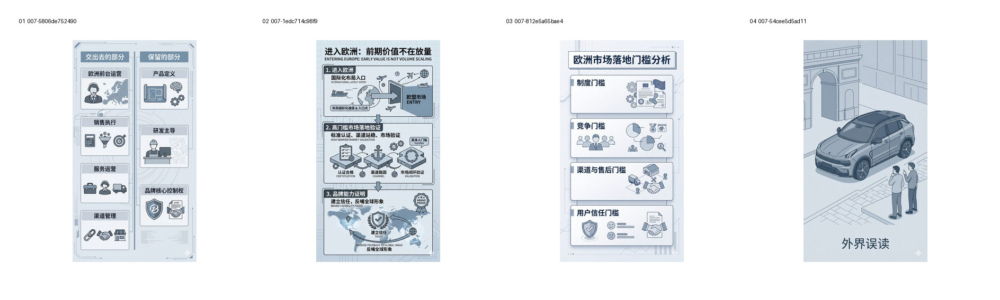
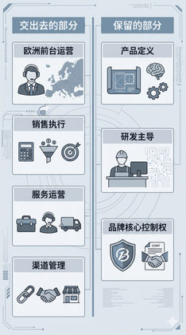
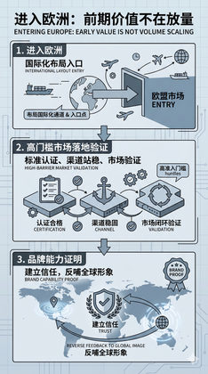
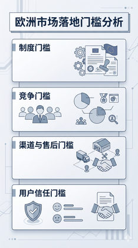
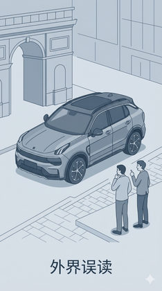

验证冷静分析方向的统一性以及 HUD / 课件气质风险。
Evidence: references/text2pic/conversations/007-Branch-1-V1视觉系统设计/IMAGE_MANIFEST.md § 7. 第六组：SVP 第 2 轮 W/H/C（12 张） / C


ccf5e3dde8595d3d…

82aac59e7c148ebc…

00ce56d30ec276b6…

7d11167c48f906bc…